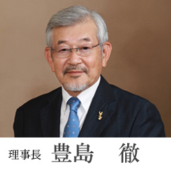
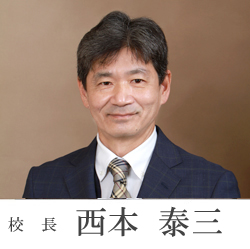

理事長挨拶

「明るく元気」は英明高等学校のシンボルワードです。「明るく元気」にあこがれ、入学し、明るく元気に学校生活をおくり、明るい笑顔で卒業してゆく。これが英明が目指す理想の若者の姿です。
英明は若い学校です。伝統はないが校風らしきものが芽生えつつあります。その一番目が「英明スタイル」と呼ばれるライフスタイルであります。我々は小さな目標を決めて、それをめざして努力する。小さな目標でも達成するとうれしい。元気も出る。もう少し頑張ってみようかと、もう少し大きい目標に挑む。これを繰り返して充実した学校生活をおくる。無理をしないので苦しすぎることはない。失望や挫折感に悩むことも少ない。平凡な人間がよくやったと自分自身をほめることもできる。この小さな、おだやかな幸福感の中で学校生活をおくるとともに、激しい変化が予想される今後の人生を、たくましく生き抜いていく力を養ってほしい。
二つ目は「選択の自由」であります。いくつかの選択肢の中から自分の考えで自分のすることを選び、決めるということであります。英明には５つのコースがある。入学時にコースを決める。二年になる時には、コースの中に多くの系が用意されている。その中から自分の系を選んで二年間を有意義に過ごす。クラブ活動や修学旅行、服装やネクタイ、リボンに至るまで選択の自由があります。
三つ目は「個性の尊重」であります。個性とは一人一人の人間がもつ「その人らしさ」であり、その人のもつ優れた能力を指すことも多い。英明はその人のもつ性質や能力を伸ばすことに力を入れている学校です。国立大学に進学するのは特進・進学コースだけでなく、優れた個性と能力をもった生徒は、総合コースからも東京藝術大学の美術・音楽に進学しています。私たちは、個性を伸ばすことに少し自信を持ち始めています。
英明高校は若い先生の多い学校です。年齢の近い明るく元気な新入生を待っています。ベテランの先生方は生徒の悩みや相談に親切に対応しています。できれば英明高等学校をあなた方の受験校の一つに加えていただけたら幸いです。お願いします。
校長挨拶

本校には、はじめは小さな夢や目標からスタートし、それが実現・達成されたら少しだけ大きな夢や目標にチャレンジし、ゆっくり着実にそれぞれのベストに近づこうとする「英明スタイル」という精神があります。それを基にしたキャッチコピー（合い言葉）が「英明高校 Challenge Change Chance 〜風は英明から〜」です。
具体的な小さな目標を立て、その目標達成のために「Challenge」していって欲しいと思います。そのためには、「Change・自己改革」が必要になってくるでしょう。昨日と同じ自分であってはいけません。つまり、「過去と他人は変えられないが未来と自分は変えることができる」ということです。この「Challenge」と「Change」を繰り返すことで「Chance」がうまれ、風が吹き始めます。
このキャッチコピーに含まれている３つの単語には共通して「CH」のスペルが含まれています。音声学では、英語のスペル「CH」が表す破擦音は、エネルギーを溜めて一気に空気を出す時の破裂と摩擦を併せ持った音だそうです。「Challenge」「Change」「Chance」の３つを実践するには、勢いとエネルギーがとても必要です。新しい環境の変化に対応するにせよ、環境そのものを切り開いていく強い意志と実践力という、自身に課せられる領域が非常に大きいのです。
そのため、「凡事徹底」という言葉が表すように、本校では「当たり前を当たり前に実践すること」を徹底します。
・ 笑顔で元気に挨拶をすること
・ 一所懸命に掃除をすること
・ きちんとした身だしなみを心がけること
・ たくさんの｢ありがとう｣が言えること
・ 英明讃歌を大きな声で歌うこと
この５つを英明高校の当たり前とします。
「Challenge」「Change」「Chance」、そして５つの「当たり前の実践」を継続することによって、どのくらい大きな、どのような色の風が英明から吹くでしょうか。私はそれを楽しみにしています。
最後になりましたが、このホームページを通して、たゆまぬ挑戦を続ける英明高校に、暖かいご理解とご協力・ご支援を賜りますようお願い申し上げ、ごあいさつといたします。